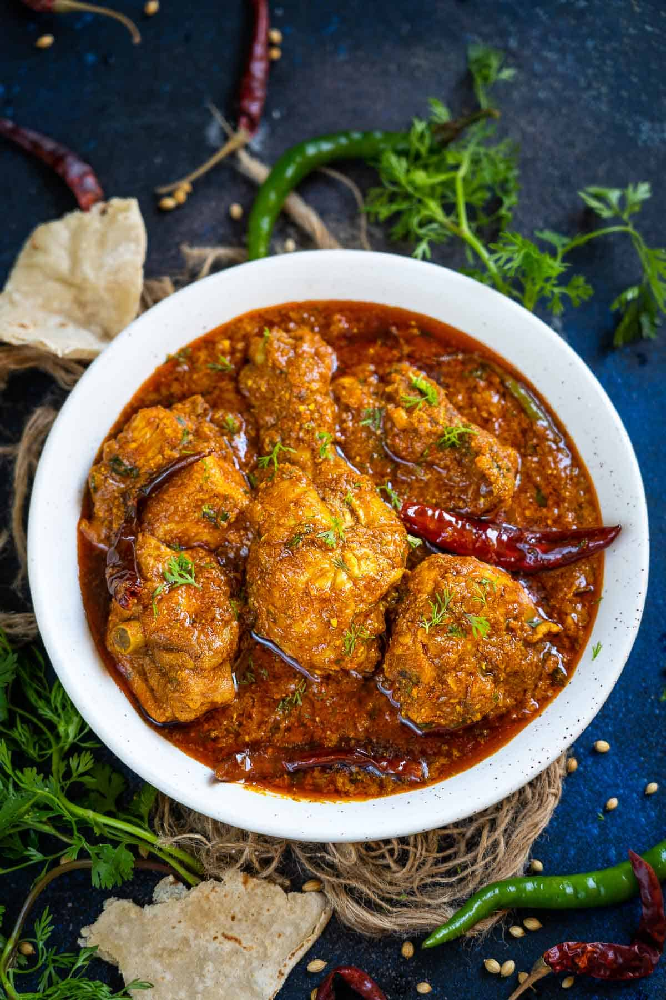

Chicken Gravy Masala

Description
One of the most simple, home style Indian chicken recipe for beginners.This chicken masala goes
great with rice, roti, naan or paratha.
Ingredients
- Chicken
- Kashmari Red chilli Powder
- Ginger garlic Paste
- Turmeric powder
- Lime Juice
- salt
- coriander seeds
- cumin seeds
- kasuri Methi
- Cloves
- Black Peppercorns
- Cinnamon
- Cardamoms
- Pureed Tomatoes
- Green Chills
- Dry Chills
- Onions
- Mustard Oil
Steps
Marination for chicken masala recipe
- At first, add 500 gm bone-in chicken in a medium size bowl.
- After that add 1 tbsp ginger garlic paste.
- Next add Kashmari red chilli Powder.
- Also,add 1/8 tsp Turmeric Powder.
- Sprinkle 1/4 tsp spoon salt, 1 tsp garam masala Powder.
- Then add 1 tbsp mustard oil.
- Also add 1 tsp Lime Juice.
- Mix everything such that every spice evenly coated with chiken pieces.
- Finally, set aside marinated chicken in the refrigerator for up to 1-2 hours or for tender and juicy chicken.
- While marination is going on chopped 3 medium-size tomatoes, deseed them and make smooth tomato puree in a blender.
Making spicy chicken masala gravy
- Heat oil and add cumin seeds.
- When they splutter, add onion mixture and sauté over high heat till light brown.
- Add the tomatoes, and sauté till fat separates.
- Add the garam masala, salt, turmeric, coriander powder and the red pepper and mix well.
- Keeping the heat high, add the chicken pieces and turn around till they are completely coated with the mixture.
- Add 1/2 cup water, bring to a boil.
- Lower the heat and cook covered till chicken is cooked through and is soft and tender.
- Serve hot garnished with the cream and coriander leaves.